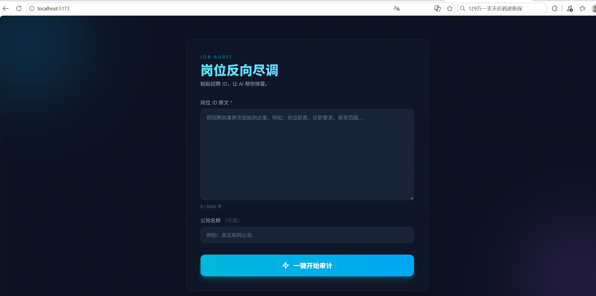
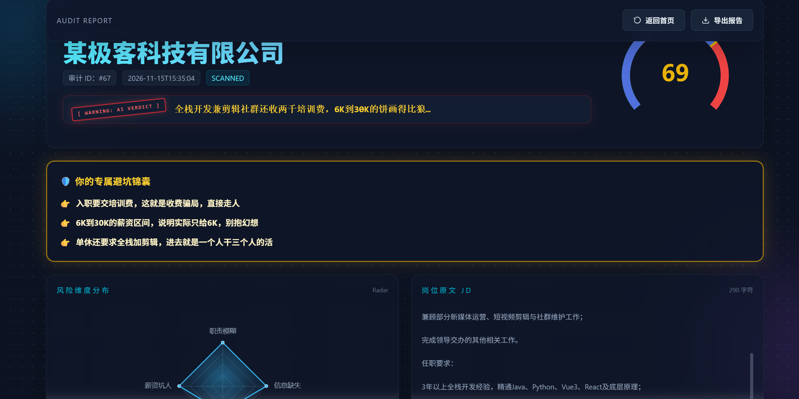
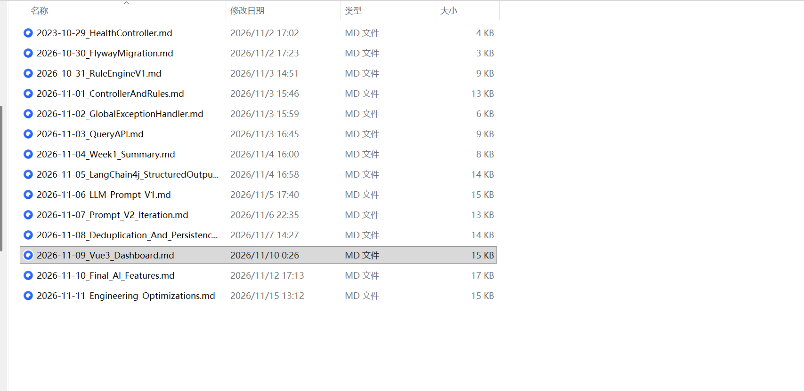
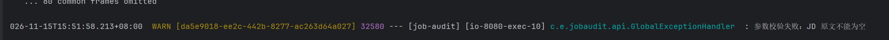
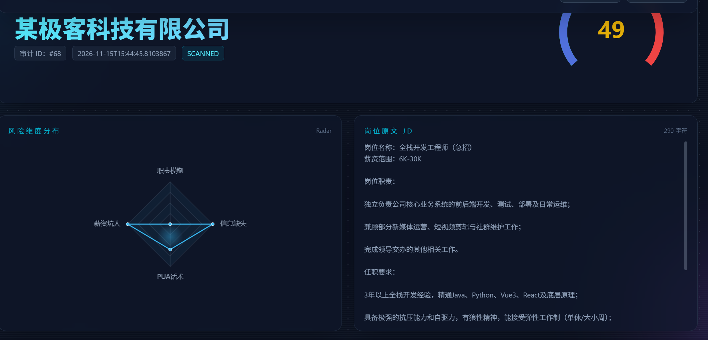
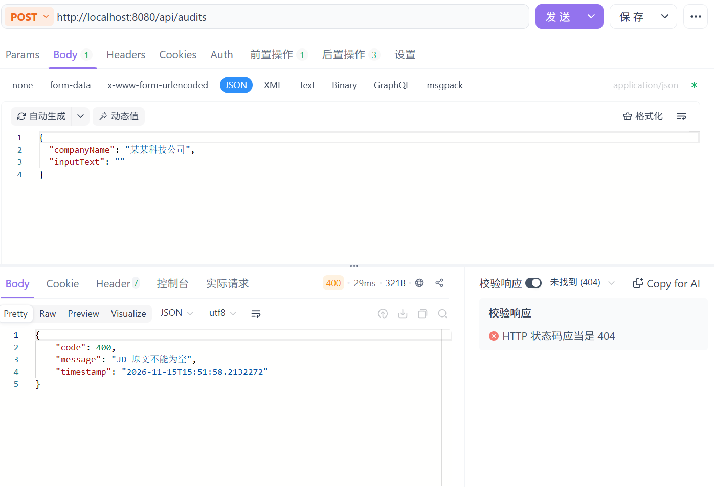
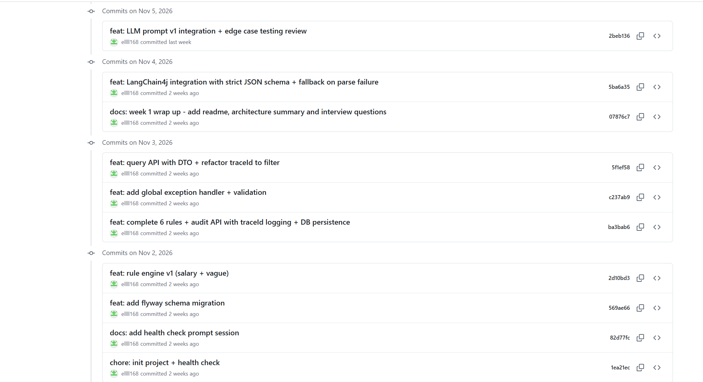

2026 · AI 创新应用挑战赛 / 技术文档
岗位反向尽调助手
基于规则 + LLM 双引擎的招聘 JD 风险审计系统
规则兜底确定性，模型只做语义增量
AI 不可用时，系统明确暴露“语义分析未生效”，而不是静默返回“无风险”。
Java 17
Spring Boot 3.5.7
LangChain4j 1.18.1
DeepSeek
MyBatis-Plus
Flyway
Caffeine
Vue 3
MySQL 8 / H2
文档摘要 / ABSTRACTjob-audit · 技术文档
阅读之前
把不确定性关进可观测的边界
本文讨论一个具体的工程问题：当审计对象是一段由招聘方撰写、可能刻意模糊的 JD 时，系统如何在有限时间内给出可解释的风险判断，并在大模型不可用时仍然保持结论可信。实现上采用规则引擎与 LLM 双引擎：硬规则负责可枚举、可单测的确定性风险，LLM 负责规则写不出来的语义陷阱；同一风险类型冲突时规则优先。全文按架构约束、意图控制、可复现性三个维度展开，所有机制均以仓库当前代码为准。
6+1
条确定性硬规则
（6 业务 + 1 信息量兜底）
24h
Caffeine 缓存 TTL
Key = SHA-256(JD)
CONTENTS目录
01架构设计与工程约束03
分层职责 / 双引擎边界 / 短事务 / 缓存 / Flyway / 运行界面
02AI 协同与意图控制策略09
结构化输出降级 / Few-shot 迭代 / 三视角隔离 / 会话留痕
03可复现性与鲁棒性论证13
TraceId / 降级截图 / 参数校验 / 提交与验证矩阵
SCOPE口径说明
以代码为准。文中涉及的行为、常量与边界条件，均对照仓库实现核对；当需求描述与实现不一致时，按实现如实表述，并在正文中标注差异。
数字口径：22 项测试、14 份会话快照、18 个提交均为仓库当前状态；模型效果数字（如 V2 回归）注明样本量，不包装为统计结论。
边界口径：未做端到端实测的能力（如 Docker 部署）明确标注为已知边界，不作为已验证结论。
MAP三个问题，三条回答
| 评委可能追问 | 本文的回答 | 对应章节 |
|---|
| 规则和大模型谁说了算？ | 规则优先。模型只提供增量语义信号，冲突时保留规则结论，幻觉无法推翻确定性判断。 | 1.2 / 2.2 |
| 模型慢，会不会拖垮数据库？ | 模型调用、规则计算、合并去重全部在事务外；只有主表插入与信号批量写入进入短事务。 | 1.3 |
| AI 挂了，系统会不会假装没事？ | 不会。降级写入 SYSTEM / AI_SERVICE_DOWN 信号并透出前端，且降级结果不写缓存。 | 3.2 |
岗位反向尽调助手 · 技术文档P.02
01 架构设计与工程约束job-audit · 技术文档
01
架构设计与工程约束
ARCHITECTURE & ENGINEERING CONSTRAINTS
这一章回答的是“系统为什么这样切”。判断标准只有一条：当一次审计结果异常时，能否快速定位是参数、缓存、规则、模型还是数据库的问题。围绕这条标准，系统确立四条硬约束：双引擎职责切分、短事务边界、内容哈希缓存、Schema 版本托管。
1.1分层：每个失败点只有一个责任人
系统按接入、编排、能力、持久化四层组织。接入层由 TraceIdFilter、JobAuditController 与 GlobalExceptionHandler 组成，只负责链路标识、参数校验与错误归一；编排层只有 AuditService，负责缓存判定、引擎调度、结果合并与交付；能力层由规则引擎、语义提取、缓存与三次生成式调用构成，彼此不感知对方内部实现；持久化层只有 AuditPersistenceService，是整条链路唯一持有事务边界的地方。
这样切分的收益是排障顺序确定：先看参数是否通过 @Size(max=8000) 校验，再看缓存是否命中，再看规则命中数，再看 LLM 返回状态，最后看落库结果。任何一层出问题，都不会把责任模糊地推给“整个审计服务”。整体分层如图 1 所示。
图1：系统架构图 四层职责与唯一事务边界；虚线框表示异常旁路，不参与正常调用链。
岗位反向尽调助手 · 技术文档P.03
01 架构设计与工程约束job-audit · 技术文档
1.2双引擎：规则兜底确定性，模型只做增量
规则引擎承担六类业务规则与一条信息量兜底：salary_opacity 判断“面议”或折算为元后上下限差距超过 2 倍（支持 K、千、万，无单位且数值小于 1000 时按年限/人数排除）；vague_duty 匹配“完成相关工作”“领导交办的其他工作”等套话变体，并在 JD 存在具体业务线时豁免；contradictory_req 捕获“资深/专家”与“应届/小白/无经验”并存；urgency_noise、scam_risk、overwork_risk 分别覆盖紧迫话术、招转培危险词与超时加班组合；information_missing 在剔除 Unicode 标点与空白后有效字符不超过 20 时触发，且不中断其余规则。
LLM 只负责四类语义陷阱：pua_culture（狼性文化、PUA 话术）、overpackaged（只谈福利期权、不谈业务与薪酬）、broad_duty（一人包揽全栈且边界不清）、salary_mismatch（要求极高、薪资极低）。Prompt 明确列出硬规则已覆盖的类别并要求忽略，避免重复提取；同时补充一句边界：“硬规则只判断薪资是否透明，不判断薪资与要求是否匹配”，否则模型会把“4-6K 招全栈”误判为硬规则已处理而放弃输出。
两路结果按 signalType 合并去重：同一类型同时被规则与模型命中时保留规则；同来源则保留 confidence 更高者，规则信号没有置信度，比较时按 0 处理。模型不返回 severity，由置信度映射：大于等于 0.8 为 HIGH，大于等于 0.5 为 MEDIUM，其余为 LOW。完整处理流如图 2 所示。
ENGINEERING JUDGEMENT
规则优先不是对模型的否定，而是把幻觉的影响范围限制在“增量信号”上。模型可以补充规则看不见的语义风险，但不能推翻一条可由正则和数值比较证明的结论；即使模型输出完全错误，用户仍然拿得到确定性结果。
图2：双引擎处理流 规则与模型并行产出，按风险类型合并；模型失败只影响语义增量，不阻断主链路。
岗位反向尽调助手 · 技术文档P.04
01 架构设计与工程约束job-audit · 技术文档
1.3短事务：把秒级等待移出连接持有期
一次提交最多触发三次模型外呼：语义提取、毒舌锐评、避坑建议（面试反问走独立接口按需生成）。单次语义调用通常在秒级（本项目观测约 1.5 秒；网络异常时还要叠加超时与重试的等待）。如果把整个审计方法标记为 @Transactional，数据库连接会在模型思考期间被一直持有，并发一上来连接池就会被耗尽，表现为“数据库没压力，但请求全部排队”。
实现上把流程拆成两段：AuditService 只做编排，规则扫描、LLM 调用、合并去重、锐评与建议全部在事务外完成；AuditPersistenceService.saveAudit 才加 @Transactional，只包住 INSERT job_audit 与 saveBatch audit_signal（每批 50 条）。任一写入失败，主表与子表整体回滚。故障注入测试用 Mock 让批量写入抛出异常，断言 job_audit 记录数不增加。
TRADE-OFF
代价是放弃“全流程一个事务”：模型输出作为中间结果不落库，失败即丢弃，用户重试时重新计算。对审计场景这是可接受的——审计结果要么完整落库，要么不产生脏数据；把长事务换成短事务，是用少量重复计算换取连接池的确定性。
1.4缓存：用内容哈希消除重复外呼
缓存 Key 不是 JD 原文，而是原文经 strip() 去首尾空白、把连续空白折叠为单个空格后的 SHA-256 十六进制摘要。这样只差换行与缩进的同一段 JD 也能命中，同时避免把长文本直接作为 Map Key。缓存实现为 Caffeine：expireAfterWrite(24h)、maximumSize(2000)、开启统计；Value 是一次解析的完整产物——信号列表、毒舌锐评、避坑建议，命中即零模型调用。
两个容易忽略的一致性细节：第一，存取都返回副本，因为持久化层会给记录回填 auditId 与 createdAt，若缓存同一批对象，下一次命中会带着上一次的主键；第二，降级结果不写缓存，AI 恢复后同一段 JD 必须重新走语义提取，否则一次故障会被缓存成 24 小时的“安全结论”。此外，若缓存里的锐评为 null（上次生成失败），命中后会补生成一次并刷新缓存。
已知边界：这是进程内缓存，重启即失效，多实例部署时各实例各自持有、不共享。它解决的是单机重复查询，不宣称具备分布式缓存的一致性；横向扩展时需要替换为 Redis 一类共享存储。
查询接口 GET /api/audits/{id} 的避坑建议同样先读缓存；未命中时按需生成但不回写，因为此时信号来自数据库，可能混入 SYSTEM 降级提示，写回会污染语义缓存。
岗位反向尽调助手 · 技术文档P.05
01 架构设计与工程约束job-audit · 技术文档
1.5Schema：迁移脚本是唯一事实源
数据库结构只由 Flyway 管理。V1 建立 job_audit 与 audit_signal 两张表（InnoDB、utf8mb4，子表通过外键关联主表），V2 为 job_audit 增加 ai_verdict 与 interview_questions 两列。应用启动时自动执行迁移，baseline-on-migrate=true 兼容已有库。ORM 使用 MyBatis-Plus 的 BaseMapper，只做 CRUD，不参与建表；项目没有引入 Hibernate，也不存在 ddl-auto。
拒绝自动建表的理由很具体：DDL 一旦成为运行时副作用，评审时看不到、回滚时找不到、线上出问题时也无法判断是谁改的。迁移脚本把结构变更变成可 diff、可 review、可顺序执行的代码，V1 与 V2 就是两份可审计的契约。演示模式（H2）不执行 MySQL 专有脚本，改用结构等价的 schema-h2.sql，避免“演示能跑、生产迁移失败”。
1.6四条约束的落点与证据
| 约束 | 代码落点 | 可验证证据 |
|---|
| 双引擎职责切分 | AuditRuleEngine / SignalExtractionService | 规则单测 14 项；Prompt 契约测试断言 Few-shot、硬规则边界与输出格式 |
| 请求内短事务 | AuditPersistenceService#saveAudit | 故障注入测试：批量写入失败后主表记录数不变 |
| 内容哈希缓存 | JdSignalCache#keyOf / get / put | 运行日志可观察“未命中 → 重新提取”与命中复用 |
| Schema 版本托管 | db/migration/V1__init.sql、V2__add_ai_verdict.sql | MySQL 启动自动迁移；H2 demo 使用等价脚本 |
| 失败语义可见 | AuditService#aiDownRecord | 残缺 JSON 降级测试；实机返回 AI_SERVICE_DOWN |
CHAPTER SUMMARY
四条约束指向同一个目标：把不确定性关进可观测的边界。规则给出确定性下限，短事务保证数据库不被模型拖住，缓存消除重复外呼，Flyway 保证结构可追溯。它们不是孤立的优化点，而是一组互相支撑的工程前提——任何一条失守，后面的意图控制与降级策略都会失去意义。
需要说明的是，这套架构并不追求“全链路无状态”：缓存是进程内的，事务只覆盖落库，模型调用没有重试队列。这些取舍在单机、中小流量、以“结果可解释”为第一目标的比赛场景下成立；如果要做成生产级服务，下一步应当补上共享缓存、异步任务与限流，而不是继续在单机进程内堆功能。
岗位反向尽调助手 · 技术文档P.06
01 架构设计与工程约束job-audit · 技术文档
1.7运行界面：输入与结果
界面不是装饰，而是双引擎结果的外化。输入页只收集审计必需的两项信息：公司名与 JD 原文；提交后，结果页把风险总分、维度分布与逐条信号放在同一屏，用户不需要在多个页面之间拼结论。输入界面如图 3 所示，提交后的结果大屏如图 4 所示。

图3：JD 粘贴与提交界面 输入公司名与 JD 原文，提交后进入审计。

图4：审计结果大屏 风险总分、风险维度雷达图与信号清单同屏展示。
岗位反向尽调助手 · 技术文档P.07
01 架构设计与工程约束job-audit · 技术文档
1.8双引擎产出：从信号到可执行动作
风险信号最终以统一卡片呈现，但 source 字段没有被隐藏：来自规则与来自模型的信号在同一列表中可区分，SYSTEM 只用于降级提示。页面同时给出避坑建议与面试反问，把“识别风险”推进到“现场怎么问”。风险明细与 AI 追问如图 5 所示。
 图5：风险明细与 AI 追问 风险卡片、避坑建议与面试反问同屏展示。
图5：风险明细与 AI 追问 风险卡片、避坑建议与面试反问同屏展示。
| 产出 | 页面呈现 | 来源 / 约束 |
|---|
| 风险信号 | 类型、等级、判定依据、来源 | RULE / LLM；SYSTEM 仅作降级提示 |
| 毒舌锐评 | 一句话定性，不超过 60 字 | LLM；生成失败为 null，页面隐藏该区块 |
| 避坑建议 | 2-3 条陈述式提醒，每条不超过 30 字 | LLM；失败返回空列表，不阻断主流程 |
| 面试反问 | 3 条第一人称问题，以“？”结尾 | LLM；按需生成并回写 interview_questions |
这四类产出不是四次独立的“炫技”，而是同一条审计链路的四种表达：信号回答“哪里有问题”，锐评回答“最致命的是什么”，建议回答“要防什么”，反问回答“现场怎么问”。
岗位反向尽调助手 · 技术文档P.08
02 AI 协同与意图控制策略job-audit · 技术文档
02
AI 协同与意图控制策略
INTENT CONTROL & PROMPT ENGINEERING
这一章讨论的不是“如何调用大模型”，而是如何让一个概率性组件在工程上可验收。手段分三层：协议层尽量强约束，Prompt 层把业务边界写死，服务端再做最后一道拦截。三层都失效时，系统宁可承认失败，也不输出一条看似正常的错误结论。
2.1结构化输出：从协议强约束到“契约 + 校验”
最初版本按严格模式实现：用 LangChain4j 的 ResponseFormat 挂载 JsonObjectSchema（三个字段、必填、禁止额外属性），并开启 strictJsonSchema(true)。实测 deepseek-chat 端点返回 This response_format type is unavailable now，说明该模型不支持 OpenAI 的 json_schema 模式。继续坚持协议层强约束，只会让每次请求都失败。
于是降级为 json_object 响应模式，把字段约束下移到两处：Prompt 的 # Output Format 段明确“只输出一个 JSON 对象、三个字段不可缺失/改名/新增、不要 Markdown”，以及服务端的 parseOrDegrade。后者做三件事：反序列化后显式检查 signalType 与 reason 非空（Jackson 对缺失字段默认不报错，这是踩过的坑）；confidence 缺失时用 0.8 兜底而不是丢弃整条信号；任何解析异常转为 pending_review，原始响应进 WARN 日志，但不记录用户 JD 原文与模型请求体。
ResponseFormat.builder()
.type(ResponseFormatType.JSON) // json_object：模型端不支持 json_schema
.build();
| 层次 | 手段 | 失效时的表现 |
|---|
| 协议层 | json_schema + strict（已降级） | 端点直接报错，无法使用 |
| Prompt 层 | Output Format 锁定字段与枚举，禁止 Markdown | 可能输出多余文字或改字段名 |
| 服务端 | parseOrDegrade 显式校验 + 默认值 + 降级 | 拦截坏数据，转人工复核，不抛 500 |
ENGINEERING JUDGEMENT
模型端的“强约束”不可用时，不能把约束一起放弃。把约束从协议层下移到 Prompt 契约加服务端校验，接受模型“概率性遵守”，但保证“违规必被拦截”。这不是退让，而是把确定性从模型侧收回到自己手里。
岗位反向尽调助手 · 技术文档P.09
02 AI 协同与意图控制策略job-audit · 技术文档
2.2Few-shot 迭代：修正的是“归类逃逸”，不是格式
V1 的失败不是 JSON 不合法，而是合法但漏报。用真实 JD 压测时发现，“要求精通 Java、前端、运维、算法，薪资 4-6K”这类样本没有被识别为语义风险：模型把它归入硬规则已经覆盖的 salary_opacity，于是输出 none。这不是模型“不会判断”，而是它在边界模糊时选择了保守的归类逃逸。业务侧最初的原型是“3 年经验全栈 4-6K”，落到 Prompt 时写成可判定的表述：“要求精通 Java、前端、运维、算法，薪资 4-6K”。
V2 做了三件事，顺序很重要：先扩分类，把语义风险从 3 类扩到 4 类，新增 salary_mismatch，明确“要求极高、薪资极低”；再给样例，注入两组 Few-shot——overpackaged（只谈发展空间、零食下午茶、薪资面议）与 salary_mismatch（精通 Java/前端/运维/算法，4-6K），并追加“不要输出示例内容”防止照抄；最后补边界，在 Constraints 中写明“硬规则只判断薪资是否透明，不判断薪资与要求是否匹配；要求极高但薪资极低，仍应提取 salary_mismatch”。最后这句话才是修复漏报的关键，它解决的是分类职责，而不是输出格式。完整的迭代对照如图 6 所示。
回归用 7 组样例：Few-shot 原样输入稳定输出 salary_mismatch（0.92）与 overpackaged（0.85）；对照组“面议 + 单休 + 抗压（仅硬规则覆盖）”仍为 none，证明新增分类没有破坏硬规则豁免。需要严谨说明：迭代记录中的“召回率 0%→95% 以上”是项目内口径，样本只有 7 组，属于工程回归，不构成统计评测。
同期规则侧也做了配套迭代：vague_duty 正则改为结构式匹配，覆盖“公司安排的其他相关工作”等变体；薪资解析补充“万”单位并统一折算为元；information_missing 改为剔除 Unicode 标点与空白后计数，阈值定为小于等于 20，并去掉提前 return，让兜底信号与其它规则并排输出。这些改动说明：漏报往往不是模型单方面的问题，而是规则与 Prompt 的边界没有对齐。
图6：Prompt 迭代记录 V1 的漏报来自分类职责不清；V2 用“扩分类 + 给样例 + 写边界”三步修正。
岗位反向尽调助手 · 技术文档P.10
02 AI 协同与意图控制策略job-audit · 技术文档
2.3视角隔离：用言语行为定义字段
系统对外的三个 AI 字段不是一次调用的三个属性，而是三次独立调用、三套 System Prompt。原因很直接：同一批风险信号，如果让模型“顺便”给建议，输出会自然滑向“你要去问 HR……”的混合体，前端无法分栏，用户也分不清“事实判断、行动建议、现场话术”的区别。
aiVerdict 的说话人是“嘴上不饶人但句句在理的毒舌评论员”，只做吐槽定性，不超过 60 字（代码常量 VERDICT_MAX_LENGTH，与早期 30 字口径相比已放宽），禁止给建议、禁止问句、禁止列举；解析层去掉引号与换行，超长截断并补省略号，空结果降级为 null。avoidanceTips 的说话人是“说话直接的资深职场导师”，写陈述式提醒，每条不超过 30 字、最多 3 条；解析层剥掉序号与引号、去掉句末标点，并过滤以问号结尾的行，防止跑成反问。questions 的说话人是“正在面试现场、准备向 HR 提问的求职者”，必须是第一人称疑问句、以问号结尾、尽量引用 JD 细节；解析层按问号切分一行多问、补全问号、最多取 3 条，生成后以换行拼接写入 job_audit.interview_questions，重复请求直接读库。
| 字段 | 说话人 | 句法约束 | 解析层硬闸 | 失败策略 |
|---|
| aiVerdict | 毒舌评论员 | 吐槽陈述句，≤60 字 | 去引号换行；超长截断补“…”；空则 null | 静默降级 |
| avoidanceTips | 职场导师 | 陈述式提醒，≤30 字，2-3 条 | 剥序号引号；丢弃问句行；最多 3 条 | 返回空列表 |
| questions | 求职者本人 | 第一人称疑问句，以“？”结尾 | 按问号切分；补问号；最多 3 条 | 抛出，交全局处理 |
隔离的有效性来自三个可检验维度：说话人（谁在说）、人称（我 / 你 / 第三人称）、句末形态（陈述 / 祈使 / 疑问）。这比在 Prompt 里写“不要写建议”这类抽象禁令可靠得多，因为抽象禁令无法被解析层验证，而言语行为可以。解析层的过滤是第二道闸：即使模型越界，也不会污染其他栏位。
FAILURE PRIORITY
主结果必须可用，增值内容可以缺失。锐评与避坑建议生成失败时静默降级（null / 空列表），不阻断审计主流程；只有反问接口在模型调用失败时抛出异常，由
GlobalExceptionHandler 统一返回。这个优先级是按“用户最少需要什么”定的，而不是按“哪个功能更酷”定的。
另有一条与意图控制相关的边界：Prompt 与模型请求/响应日志默认关闭（log-requests=false、log-responses=false），因为 JD 原文属于用户输入，不应落进日志。可观测性不能以泄露用户内容为代价。
岗位反向尽调助手 · 技术文档P.11
02 AI 协同与意图控制策略job-audit · 技术文档
2.4迭代留痕：会话快照不是最终版备份
Prompt 的演进没有只保留最后一版。prompts/sessions/ 下按日期保存了每一轮会话记录，内容包括需求原文、当时的方案、踩到的坑与最终取舍；prompts/prompt-iterations.md 另行汇总 V1 到 V2 的差异。这样做不是为了“留档好看”，而是为了让任何一次行为变化都能追溯到具体指令与失败样例。会话目录如图 7 所示。

图7：AI 会话演进记录 按日期归档的需求、方案与修正过程。
需求原文保留
每一轮改了什么都从原始需求出发，避免事后用结论倒推过程。
失败样例保留
漏报的 JD、坏 JSON、错误分类都留在记录里，作为下一次回归的输入。
取舍理由保留
为什么降级为 json_object、为什么扩大正则，记录的是判断而非口号。
约束文件独立
.trae-context.md 约束 AI 生成行为，与会话记录分离，避免规则被对话淹没。
岗位反向尽调助手 · 技术文档P.12
03 可复现性与鲁棒性论证job-audit · 技术文档
03
可复现性与鲁棒性论证
TRACEABILITY, FAILURE DRILL & REPRODUCIBILITY
这一章不描述“系统应该很稳定”，而是给出三类可核对的事实：同一请求的日志能否被一条 TraceId 串起来；外部模型故障时系统到底返回什么；另一个人拿到仓库后能否按记录复现。所有结论都限定在已验证的范围内。
3.1全链路追踪：TraceId 的生命周期必须在过滤器里
实现是一个 OncePerRequestFilter：请求进入时生成 UUID 写入 MDC，try/finally 包裹整条过滤链，在 finally 中调用 MDC.clear()；日志格式通过 logging.pattern.level=%5p [%X{traceId}] 输出。早期版本把清理放在 Controller 的 finally 里，正常路径看不出问题，但异常从 Controller 抛出后、@RestControllerAdvice 开始处理时，MDC 已经被清空——恰好是最需要 TraceId 的那条 ERROR 日志丢了上下文。重构为过滤器后，Controller、Service、异常处理器都处在同一个 MDC 生命周期内，线程池复用也不会串号（finally 保证清理）。
边界需要说清楚：这是单机、进程内的日志关联，不跨服务、不注入响应头，也不等同于分布式追踪。跨实例排障仍需要 OpenTelemetry 或统一日志平台，本文不宣称具备该能力。实际日志如图 8、图 9 所示。

图8：全链路追踪日志（IDE 控制台） 同一次请求的多条日志共享同一 traceId。
16:05:13.112 INFO [4de59c75…77ab7a] JobAuditController 收到岗位审计请求，traceId=4de59c75…77ab7a
16:05:13.112 INFO [4de59c75…77ab7a] JdSignalCache JD 解析结果缓存未命中，key=70ca8257…d47083
16:05:13.112 INFO [4de59c75…77ab7a] SignalExtractionService AI 外呼已关闭（demo / 未配置 Key）→ pending_review
16:05:13.112 INFO [4de59c75…77ab7a] AuditService LLM 未产生语义信号，status=pending_review
16:05:13.113 INFO [4de59c75…77ab7a] AuditService JD 信号提取完成，规则=4，LLM=0，合并后=4，AI降级=true
16:05:13.118 INFO [4de59c75…77ab7a] AuditService 审计完成，auditId=2，信号数=5，锐评=null，建议=0 条
16:05:13.118 INFO [4de59c75…77ab7a] JobAuditController 审计处理完成，auditId=2，返回信号数=5
图9：同一请求的日志字段节选 为可读性重新排版，内容与图 8 对应。
同一次运行的相邻两次请求分别生成 d2731968… 与 4de59c75…，线程池复用但没有串号；这也反向验证了 finally 清理的必要性。
重构前 · Controller 内清理
Controller 的 finally 先执行 MDC.clear()，异常继续抛给 @RestControllerAdvice；异常日志打印时 traceId 已为空，故障现场失去关联键。
重构后 · Filter 内清理
OncePerRequestFilter 的 finally 包住整条链，Controller、Service 与异常处理器共享同一 MDC；请求结束统一清理，线程复用不串号。
岗位反向尽调助手 · 技术文档P.13
03 可复现性与鲁棒性论证job-audit · 技术文档
3.2故障演练：AI 欠费断网时，规则结果必须照常返回
演练方式有两种：把 LLM_API_KEY 换成欠费或无效 Key，或者直接断网，触发 DeepSeek 返回 402、超时或连接失败；另一种是 demo profile 下 jobaudit.ai.enabled=false，不产生任何外呼，直接走同一条降级路径。预期链路是：SignalExtractionService.extract 捕获所有调用异常，返回 status=pending_review 的结果；AuditService 识别该状态后，追加一条 source=SYSTEM、signalType=AI_SERVICE_DOWN、severity=INFO 的记录；规则信号照常合并、落库并返回 200；本次结果不写缓存；前端按系统提示渲染“AI 服务降级”，而不是把“零信号”显示成“岗位安全”。降级路径如图 10 所示。
这里需要澄清一个容易写错的细节：AI 欠费断网并不会走到 GlobalExceptionHandler。它在外呼边界就被捕获并转成业务状态，这是有意的——降级是“部分能力不可用但主结果可用”，不应该被当成 500 请求失败。真正进入 GlobalExceptionHandler 的是未被兜底的异常（例如反问接口的模型调用失败），它返回统一的 ErrorResponse 与“服务器开小差了，请稍后再试”，堆栈只进日志，前端 ElMessage 提示“审计失败，请确认后端服务已启动后重试”。两条路径必须分开设计，否则会把可降级的故障升级成不可用。
实机返回可以直接核对：规则命中 salary_opacity(HIGH)、vague_duty(MEDIUM)、urgency_noise(LOW)、overwork_risk(MEDIUM) 四条，外加一条 AI_SERVICE_DOWN(INFO, SYSTEM)，HTTP 状态为 200，aiVerdict=null。这组结果同时证明三件事：规则不依赖模型、降级可见、降级不计入风险分。
图10：AI 服务降级路径 402 与超时走同一条降级链路；规则结果、落库与 HTTP 200 均不受影响。
对应测试：FaultToleranceTest（残缺 JSON 与缺失 confidence）、SemanticSignalPromptTest（坏 JSON 降级、合法 JSON 解析、Prompt 结构）、AuditTransactionTest（批量写入失败回滚）。三者均可在无 API Key、无 MySQL、无外网的机器上执行。
岗位反向尽调助手 · 技术文档P.14
03 可复现性与鲁棒性论证job-audit · 技术文档
3.2故障现场：降级结果与信号明细
关闭模型外呼后重新提交同一段 JD，请求仍然返回 200：结果页展示规则命中的风险信号，信号明细中出现 source=SYSTEM 的 AI_SERVICE_DOWN，锐评与建议区块为空。结果页如图 11 所示，信号明细如图 12 所示。

图11：AI 宕机降级验证（结果页） 关闭模型外呼后，结果页仍展示规则命中的风险信号。
图12：AI 宕机降级验证（信号明细） 明细中包含 source=SYSTEM 的 AI_SERVICE_DOWN（INFO）。
图 11 与图 12 是同一次降级演练的前后两屏；页面没有把“语义分析未生效”隐藏成“无风险”。
岗位反向尽调助手 · 技术文档P.15
03 可复现性与鲁棒性论证job-audit · 技术文档
3.2参数校验：400 响应同样走统一出口
参数校验失败不触达规则引擎与模型：JD 为空或超过 8000 字时，Controller 的 @Valid 校验在进入 Service 前返回 400，响应体保留字段级错误信息，前端直接展示；该路径不产生审计记录。实机响应如图 13 所示。

图13：参数校验拦截（400 响应） 校验失败时返回字段级错误信息，不进入审计流程。
3.3复现路径：细粒度提交与 Prompt 会话快照
仓库当前共 18 个提交，按 feat / fix / perf / docs / chore 拆分，每个提交对应一个可独立回放的决策点：569ae66 引入 Flyway、2d10bd3 规则引擎 V1、c237ab9 全局异常处理、5f1ef58 TraceId 重构为 Filter、5ba6a35 结构化输出与降级、2836fb9 把 LLM 移出事务、20c9f4e 缓存与 H2 demo。提交记录如图 14 所示。

图14：Git 提交记录 按 feat / fix / perf / docs / chore 拆分的提交历史。
岗位反向尽调助手 · 技术文档P.16
03 可复现性与鲁棒性论证job-audit · 技术文档
3.3复现路径（续）：会话快照与验证矩阵
Prompt 迭代没有只保留最终版本。prompts/sessions/ 下共有 14 份按日期归档的会话快照，记录了每轮需求原文、方案、踩坑与取舍；prompts/prompt-iterations.md 汇总了 V1 到 V2 的差异，.trae-context.md 约束 AI 生成行为（不使用 Lombok、禁止 Hibernate 自动建表、异常统一交给 @ControllerAdvice、LLM 解析失败必须降级为 pending_review）。这些文件让“AI 参与了开发”变成可核查的过程，而不是一句声明；会话目录如图 7 所示。
| 验证方式 | 前置条件 | 结果 / 说明 |
|---|
| 全量单元测试 | JDK 17 + Maven；H2；无需 Key / MySQL / 外网 | 22 项，0 失败，1 项线上冒烟默认跳过 |
| H2 一键演示 | start-demo.bat / .sh | 不装数据库即可启动；AI 关闭时一次审计约 0.4 秒 |
| MySQL 完整模式 | MySQL 8+，注入 DB_PASSWORD | Flyway 自动执行 V1 / V2，真实模型可用 |
| 持续集成 | GitHub Actions 干净环境 | mvn test + npm ci && npm run build |
| Docker 部署 | Docker 20.10+ / Compose v2 | 文件齐备且通过 YAML 校验；作者开发机未安装 Docker，未做端到端实测 |
3.4已知边界与后续工作
为了不让“鲁棒性”变成空话，以下边界需要明确记录：进程内缓存不跨实例；语义提取每次只输出最严重的一条，不做多标签召回；BUSINESS_KEYWORDS 是启发式词表，覆盖不全时会误报 vague_duty 或 urgency_noise；salary_mismatch 缺少外部薪资基准，仍依赖模型判断；Docker 部署未在作者机器上做端到端验证。这些问题不会让主链路不可用，但会影响召回率与横向扩展能力。
后续优先级应当是：先把语义信号从单条扩展为多标签并引入可配置的薪资基准，再把进程内缓存替换为共享缓存，最后补齐异步任务、限流与分布式追踪。顺序不能反——在结果语义还不稳定之前，谈横向扩展没有意义。
CLOSING
本项目的工程价值不在于“用了大模型”，而在于把大模型放在一个可以被验证、被降级、被替换的位置：规则负责底线，Prompt 负责意图，服务端负责拦截，日志负责追溯，提交与快照负责复现。任何一环失效，系统都会以明确的方式暴露，而不是给用户一个看起来正常的错误答案。
岗位反向尽调助手 · 技术文档P.17